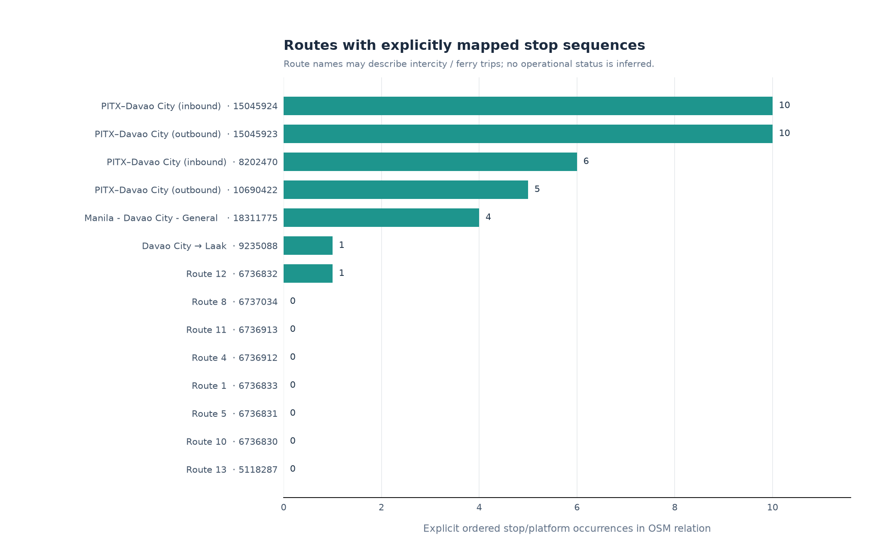
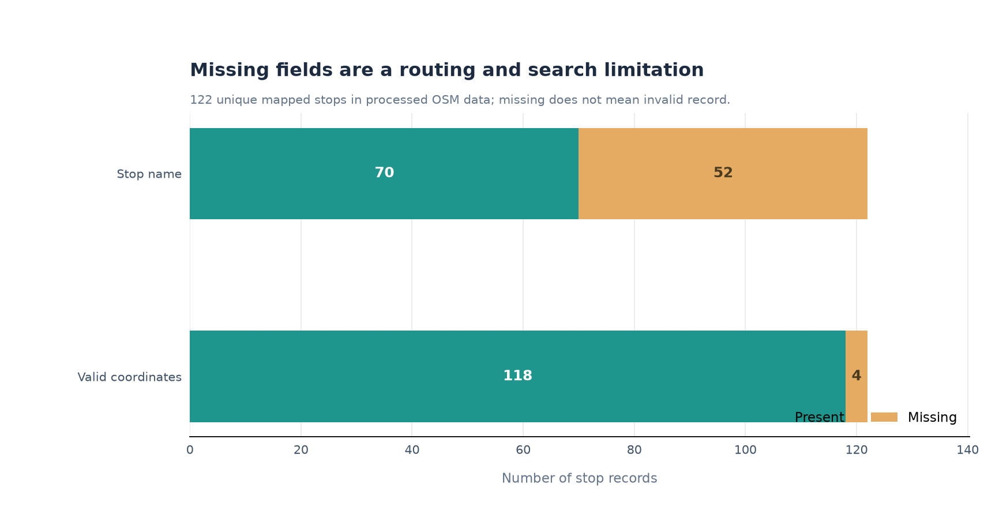
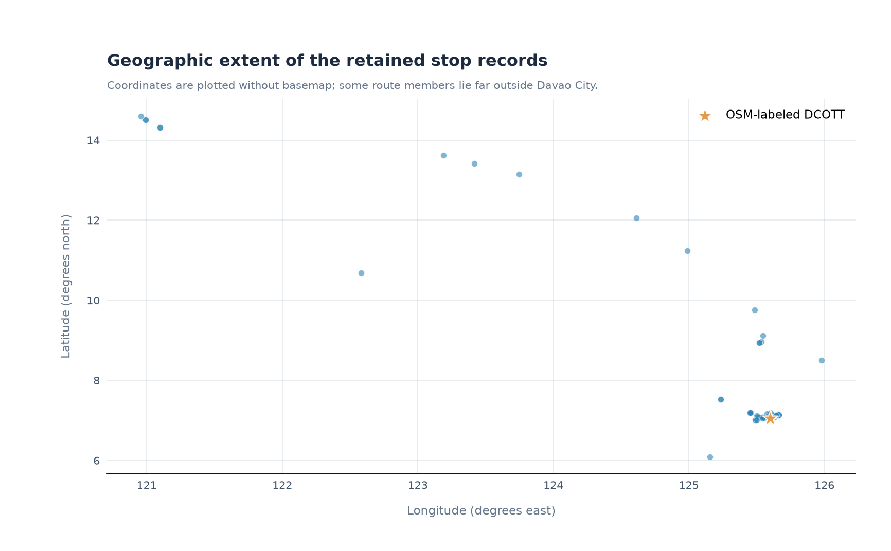
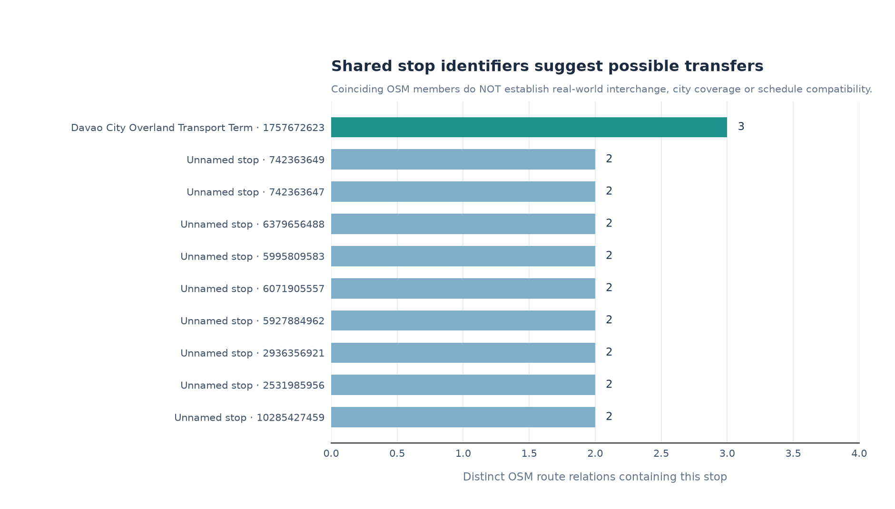

Mapped route relations
14Not necessarily active local servicesRoutes with ordered stops
750.0% of mapped relationsMapped stop records
12242.6% have no nameCandidate shared stops
10Not verified physical transfersOpenStreetMap snapshot analysis
Four evidence-based findings
Source: osm_davao_transit_elements_20260708.json. Counts describe the processed OSM extract, not officially authorized Davao service.
FIGURE 01
Route sequencing

Only 7 of 14 route relations have ordered stop members. This is an OSM mapping gap, not evidence a service is inactive.
FIGURE 02
Metadata quality

52 stops have no name; 4 lack usable point coordinates. Both limit offline route search.
FIGURE 03
Coordinate spread

Some retained relation members lie outside Davao City. Geographic scope must be verified before making local coverage claims.
FIGURE 04
Candidate interchanges

10 stop identifiers are shared by multiple routes. They are not verified usable transfers.